Pooled data for TRF1/TRF2 double KD experiment
These data come from the 08-09-2014 and the 09-09-2014 datasets.
data_visualization(data); disp(['Mean value of RgTrans / pSuper / Hela L: ' num2str(mean(data(1).distributions.RgTrans)) ' nm']) disp(['Standard deviation of RgTrans / pSuper/ Hela L: ' num2str(std(data(1).distributions.RgTrans)) ' nm']) disp(['-----------------------------------------------------------------']) disp(['Mean value of RgTrans / TRF1 and TRF2 KD / Hela L: ' num2str(mean(data(3).distributions.RgTrans)) ' nm']) disp(['Standard deviation value of RgTrans / TRF1 and TRF2 KD / Hela L: ' num2str(std(data(3).distributions.RgTrans)) ' nm']) disp(['-----------------------------------------------------------------']) disp(['Mean value of RgTrans / pSuper / Hela S: ' num2str(mean(data(2).distributions.RgTrans)) ' nm']) disp(['Standard deviation of RgTrans / pSuper/ Hela S: ' num2str(std(data(2).distributions.RgTrans)) ' nm']) disp(['-----------------------------------------------------------------']) disp(['Mean value of RgTrans / TRF1 and TRF2 KD / Hela S: ' num2str(mean(data(4).distributions.RgTrans)) ' nm']) disp(['Standard deviation value of RgTrans / TRF1 and TRF2 KD / Hela S: ' num2str(std(data(4).distributions.RgTrans)) ' nm']) disp(['-----------------------------------------------------------------']) disp(['Mean number of localizations / pSuper / Hela L: ' num2str(mean(data(1).distributions.numLoc))]) disp(['Standard deviation of number of localizations / pSuper/ Hela L: ' num2str(std(data(1).distributions.numLoc))]) disp(['-----------------------------------------------------------------']) disp(['Mean number of localizations / TRF1 and TRF2 KD / Hela L: ' num2str(mean(data(3).distributions.numLoc))]) disp(['Standard deviation value of number of localizations / TRF1 and TRF2 KD / Hela L: ' num2str(std(data(3).distributions.numLoc))]) disp(['-----------------------------------------------------------------']) disp(['Mean number of localizations / pSuper / Hela S: ' num2str(mean(data(2).distributions.numLoc))]) disp(['Standard deviation of number of localizations / pSuper/ Hela S: ' num2str(std(data(2).distributions.numLoc))]) disp(['-----------------------------------------------------------------']) disp(['Mean number of localizations / TRF1 and TRF2 KD / Hela S: ' num2str(mean(data(4).distributions.numLoc))]) disp(['Standard deviation value of number of localizations / TRF1 and TRF2 KD / Hela S: ' num2str(std(data(4).distributions.numLoc))])
Current plot held
newpos =
1.0e+03 *
0.4999 0.1851 2.8425 0.8510
Current plot held
newpos =
1.0e+03 *
0.2506 0.1821 1.3560 0.8290
Current plot held
newpos =
1.0e+03 *
0.2506 0.1821 1.3560 0.8290
Current plot held
newpos =
1.0e+03 *
0.2506 0.1821 1.3560 0.8290
Mean value of RgTrans / pSuper / Hela L: 78.8126 nm
Standard deviation of RgTrans / pSuper/ Hela L: 22.67 nm
-----------------------------------------------------------------
Mean value of RgTrans / TRF1 and TRF2 KD / Hela L: 79.8566 nm
Standard deviation value of RgTrans / TRF1 and TRF2 KD / Hela L: 26.4931 nm
-----------------------------------------------------------------
Mean value of RgTrans / pSuper / Hela S: 65.6623 nm
Standard deviation of RgTrans / pSuper/ Hela S: 22.0463 nm
-----------------------------------------------------------------
Mean value of RgTrans / TRF1 and TRF2 KD / Hela S: 68.6347 nm
Standard deviation value of RgTrans / TRF1 and TRF2 KD / Hela S: 23.0559 nm
-----------------------------------------------------------------
Mean number of localizations / pSuper / Hela L: 108.4294
Standard deviation of number of localizations / pSuper/ Hela L: 49.8753
-----------------------------------------------------------------
Mean number of localizations / TRF1 and TRF2 KD / Hela L: 94.1425
Standard deviation value of number of localizations / TRF1 and TRF2 KD / Hela L: 44.1674
-----------------------------------------------------------------
Mean number of localizations / pSuper / Hela S: 151.0833
Standard deviation of number of localizations / pSuper/ Hela S: 70.7241
-----------------------------------------------------------------
Mean number of localizations / TRF1 and TRF2 KD / Hela S: 90.7202
Standard deviation value of number of localizations / TRF1 and TRF2 KD / Hela S: 44.0072
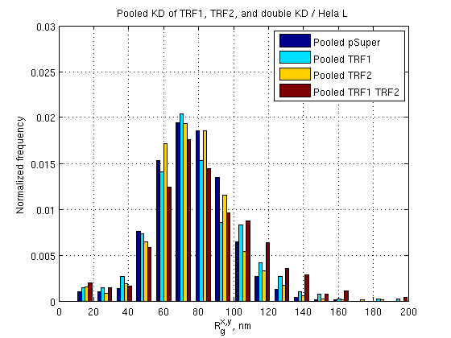 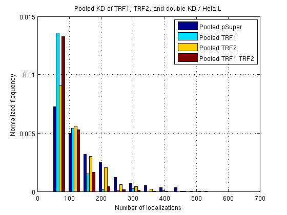 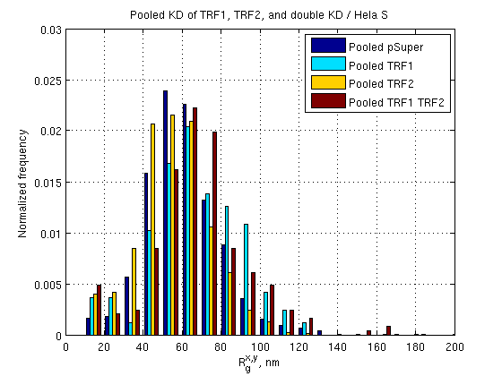 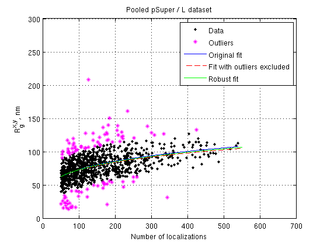 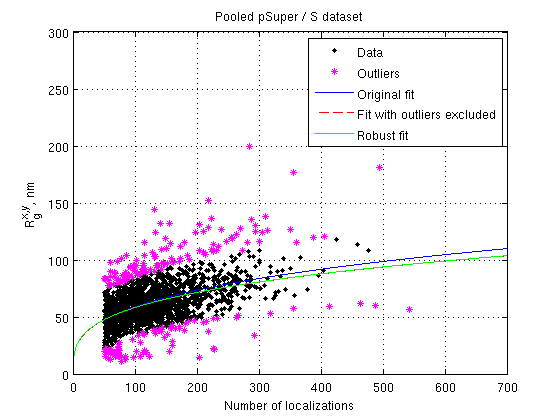 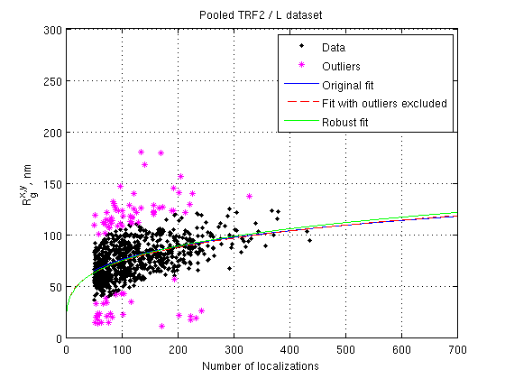 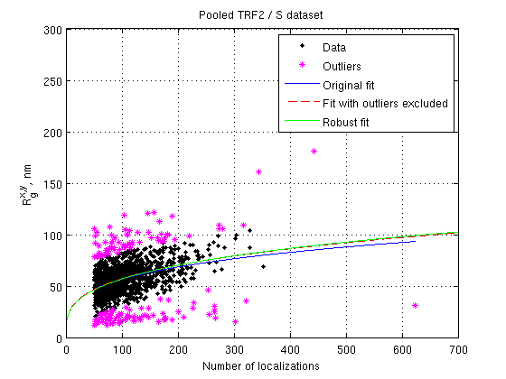 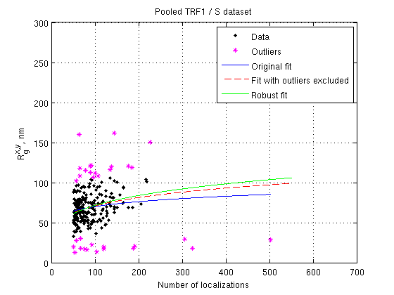 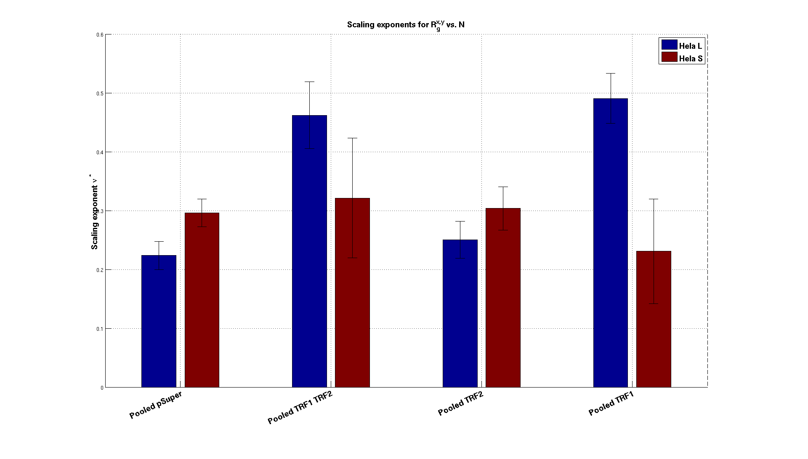 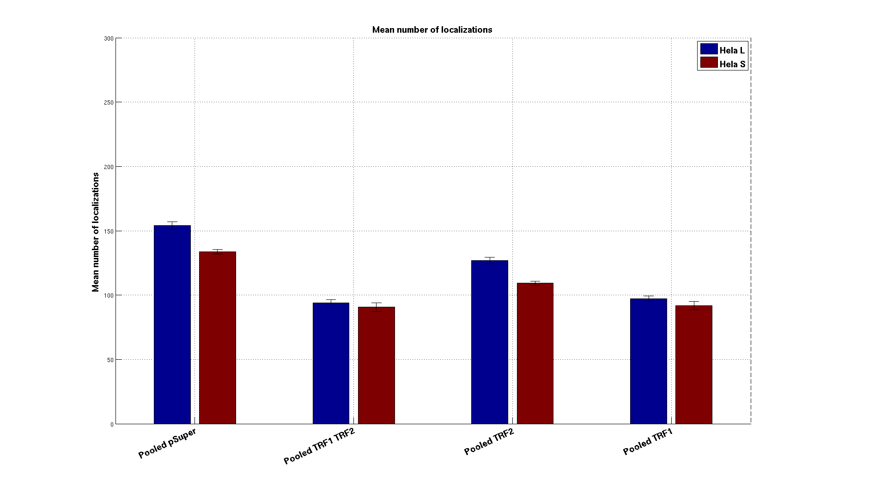 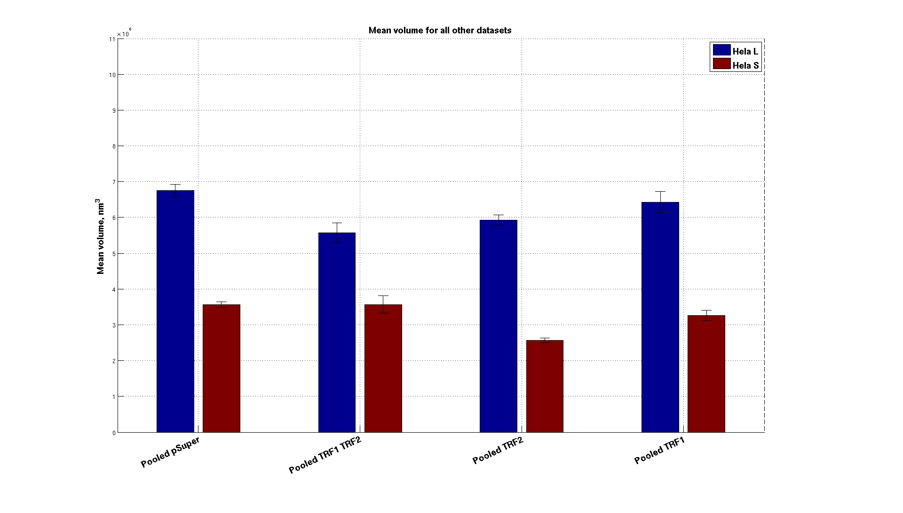 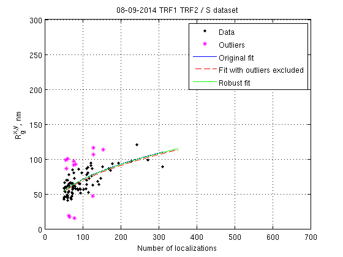 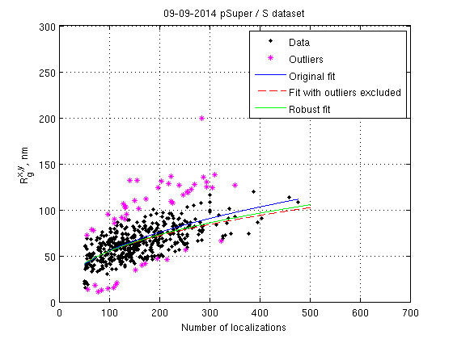 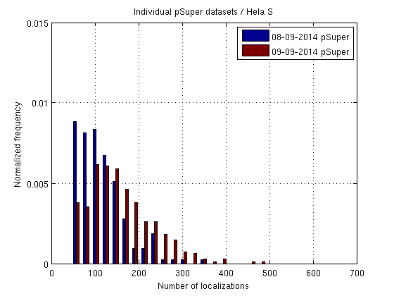 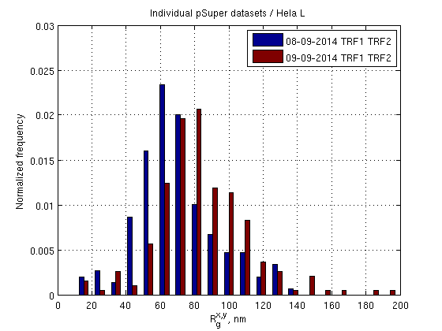